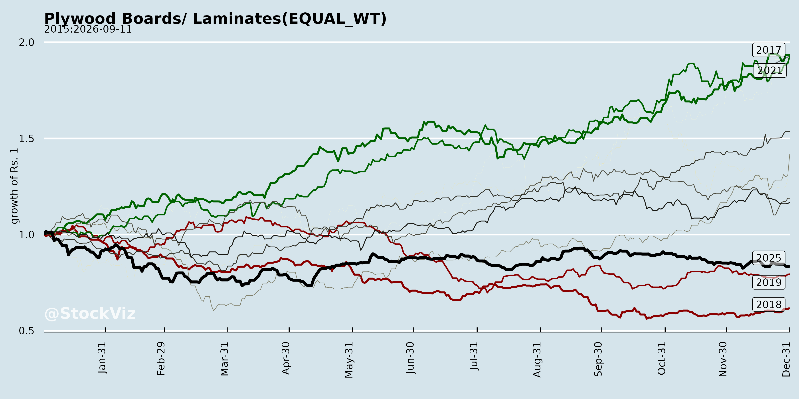
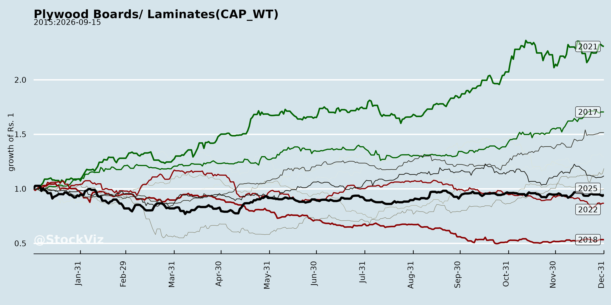
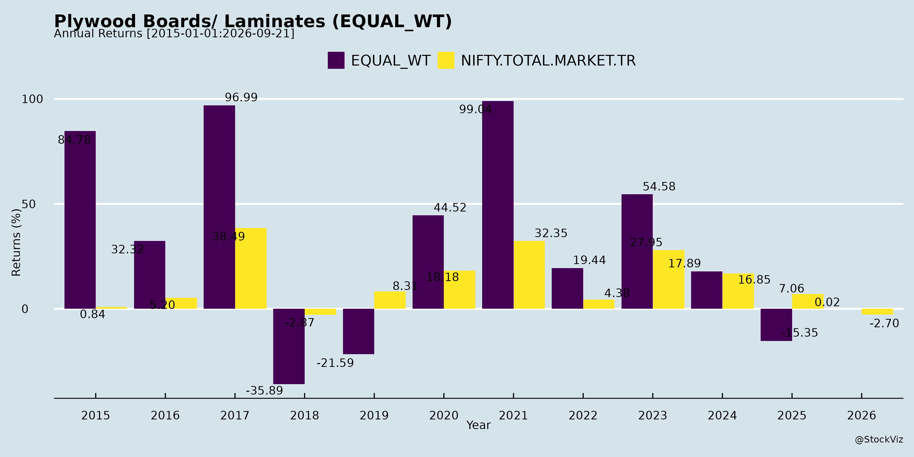
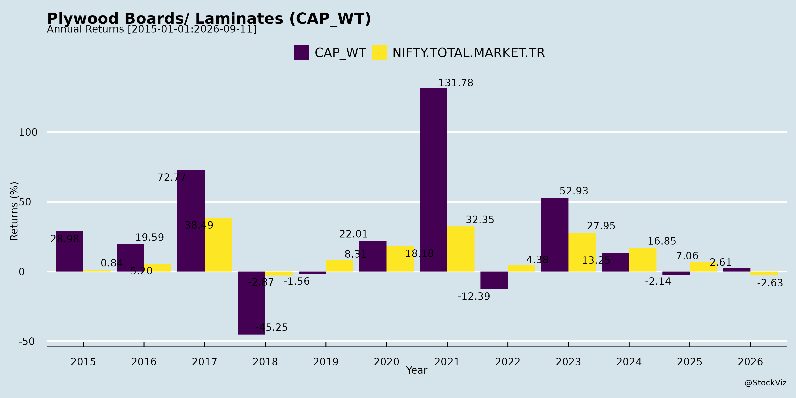
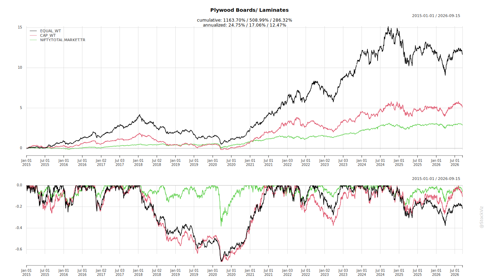
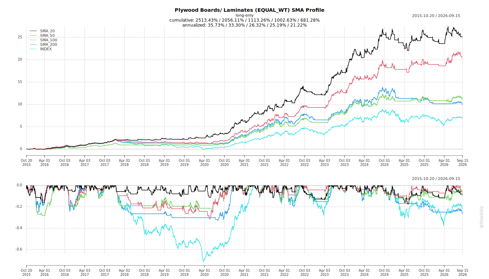
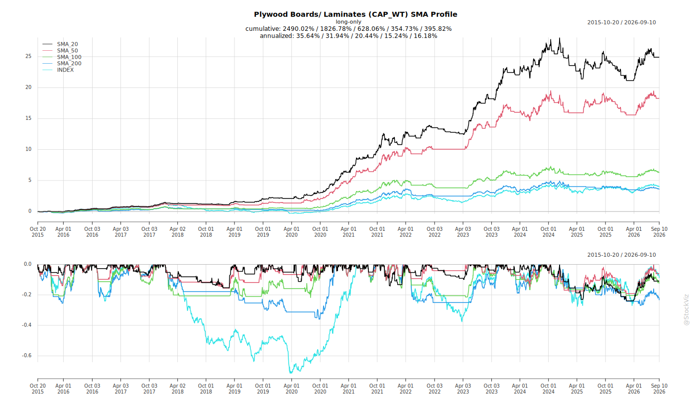
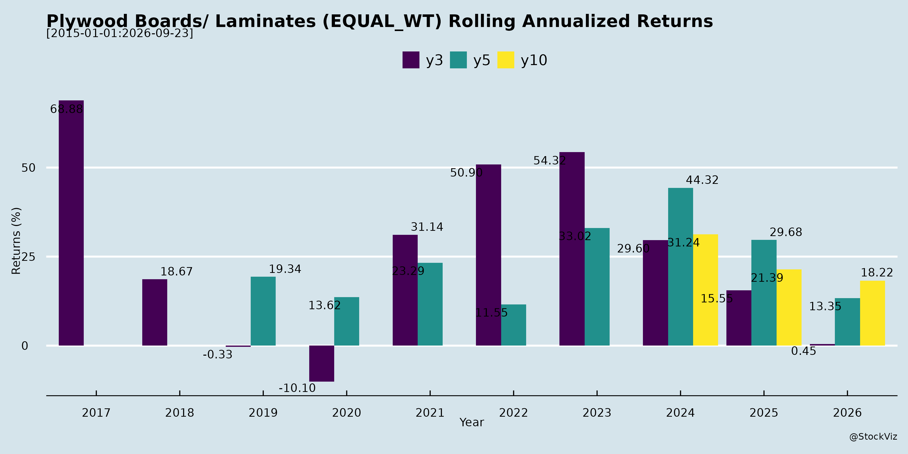
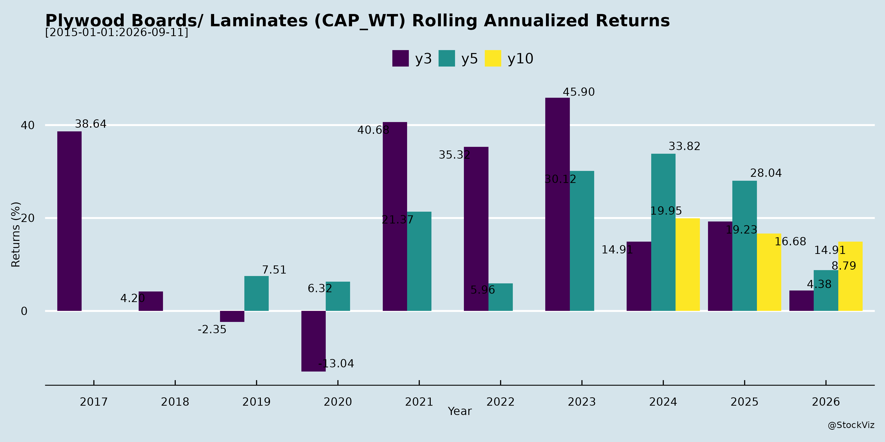

Annual Returns




Cumulative Returns and Drawdowns

SMA Scenarios


Current Distance from SMA
Rolling Returns


EBIT (% of Industry Total)
Revenue (% of Industry Total)
Analysis of Indian Plywood Boards/Laminates Sector
Based on the Q2/H1 FY26 earnings transcripts of key players (Century Plyboards, Greenlam, Greenpanel, Greenply, Rushil Decor) and Q4/FY25 transcript of Stylam Industries, the sector exhibits robust fundamentals amid a shift toward organized players. Below is a structured analysis of headwinds, tailwinds, growth prospects, and key risks. Insights are derived directly from management commentary on demand, costs, capacities, regulations, and market dynamics.
Tailwinds (Supportive Factors Driving Resilience)
- Regulatory Support: BIS/QC orders slashed imports 80-95% (Century, Greenpanel, Greenply); stricter furniture QC expected Q1 FY27.
- Demand Shift to Organized: Brand premiumization, value-added products (45-56% mix - Rushil/Stylam); healthy volumes (plywood 16-17% YoY - Century; MDF 15-30% - multiple).
- Capacity Discipline & Efficiency: De-bottlenecking (Century MDF +25%; Greenlam laminates +2M sheets); high utilizations (80-96% - Greenlam/Rushil); working capital optimization (Century 70 days; Greenlam 47 days).
- Export Strength: 10-20% YoY growth (Century/Greenlam/Stylam); premium SKUs, new markets (Rushil Jumbo exports).
- Cost Optimization: Stable/softening timber (Century/Greenpanel); internal efficiencies (Greenpanel 5.5% margin gain); debt reduction (multiple net debt-free/low).
- Product Diversification: Particle board/MDF ramps (Century/Greenpanel); Jumbo laminates (Rushil); acrylic surfaces (Stylam hopeful for 100-200cr).
Growth Prospects (Medium-Term Outlook: FY26-FY28)
- Volume/Revenue Guidance: | Segment/Company | FY26 Growth Outlook | |—————–|———————| | Plywood (Century/Greenply) | 10%+ H2 volumes; full-year 6-7% | | MDF (Century/Greenpanel/Rushil/Greenply) | High-teens/20-25%; util. 80-95% | | Laminates (Greenlam/Rushil/Stylam) | 7-20%; Jumbo adds 150-250cr (Rushil) | | Overall (Sector) | 15-20% industry; organized outperformance |
- Margin Expansion: EBITDA 10-16%+ (MDF 13-16% - Century/Greenply; Laminates 16% - Greenlam); high-teens possible with mix/utilization.
- Capex-Driven Scale: INR100-260cr expansions (Odisha PVC/plywood - Greenply; new plant - Stylam); FY27+ new MDF/particle board.
- Market Tailwinds: Urbanization, furniture OEMs, premiumization; exports >20% CAGR (Stylam target 1200cr in 2yrs).
- FY26 Consolidated Targets: Revenue 970-1000cr+ (Rushil); sustained momentum H2 (all).
Key Risks
- Supply Overhang: New capacities (organized/unorganized) could pressure realizations (Rushil/Greenpanel); industry capacity 4.2-4.5M CBM vs. 2.75-2.8M demand (Greenpanel).
- RM Volatility: Timber/chemicals (temporary per mgmt., but floods/monsoons recur); forex (Century/Greenpanel Euro loans).
- Execution Risks: Greenfield ramp-up delays (Stylam/Greenply 2-4 months); trial sales capitalization (Century particle board).
- Export/Geopolitical: Tariffs (US - Greenlam), Middle East disruptions (Greenpanel).
- Domestic Penetration: Organized share low; unorganized competition; mgmt. “internal compulsions” (Stylam/Greenply).
- Macro: Real estate slowdown, monsoon variability; high capex debt (Greenlam net debt 995cr).
Summary
The sector is in a structural upcycle driven by BIS/import curbs (tailwind reducing 80-95% competition) and organized shift (15-20% growth), with MDF/laminates leading (high-teens volumes). Tailwinds dominate via capacity ramps, premiumization, and exports (20%+ CAGR), enabling 10-16% EBITDA margins. However, headwinds like RM costs (1-2% drag) and pricing pressure cap near-term upside, with H2 FY26 recovery expected. Growth prospects strong (FY26 revenue +10-20%; FY27+ via expansions), but risks center on capacity overhang, execution, and domestic weakness (organized <10% plywood share). Overall, bullish for branded players like Century/Greenlam (resilient EBITDA), but monitor unorganized additions and RM stability. Sector ROCE/EBITDA profile improves with scale (high-teens possible).
General
asof: 2025-11-26
Sector Analysis: Indian Plywood Boards/Laminates (Based on Provided Filings)
The filings from key players (Airo Lam, Archidply, Century Plyboards, Greenlam, Greenpanel, Rushil Decor, Stylam) highlight a mix of routine governance, capacity expansions, and one tax compliance issue. Overall, the sector shows resilience with proactive growth initiatives amid regulatory scrutiny.
Tailwinds (Positive Drivers)
- Strong Demand Driving Expansions: Greenlam approved brownfield expansion (+2 Mn sheets/annum at Naidupeta plant; ₹70 Cr investment; 96% utilization in Q2 FY26) to meet domestic/global demand. Rushil commenced Phase 2 trial production (+1.6 Mn jumbo laminate sheets/annum at Gujarat plant), building on Phase 1.
- Stable Governance & Shareholder Engagement: Routine AGM notices (Airo Lam: Sep 25, 2025; Century Ply: Sep 18, 2025), annual report disseminations via web-links, secretarial auditor appointment (Archidply for 5 years from FY26), and dividend (Century Ply: ₹1/share) signal operational maturity and investor confidence.
- Digital/Compliance Efficiency: Shift to e-delivery of reports/notices (all companies) and RTA updates (Stylam) reflect adaptation to SEBI norms, reducing costs.
Headwinds (Challenges)
- Tax Scrutiny & Liabilities: Greenpanel deposited ₹4.8 Cr (IGST + interest + penalty) voluntarily post-DGGI search (FY20-25) on ineligible input credit disallowance—quantified max impact at deposit amount, but signals broader GST audit risks.
- Routine Regulatory Burden: Multiple filings under Reg 30/36 (SEBI LODR) indicate compliance overhead, potentially diverting focus amid high utilization/capex.
Growth Prospects
- Capacity Ramp-Up: Additions of ~3.6 Mn sheets/annum (Greenlam + Rushil) position sector for 8-10%+ volume growth, targeting real estate/furniture boom. Jumbo sizes (Rushil) offer premium differentiation.
- Timeline & Funding: Greenlam (Q4 FY27 completion via internal accruals/parent support); Rushil (immediate trial run). High existing utilization (Greenlam 96%) supports revenue upside.
- Market Tailwinds: Explicit nods to “growing demands” (Greenlam) amid India’s housing/infra push; sector could see 10-15% CAGR if realty sustains.
Key Risks
- Regulatory/Tax Exposure: GST disallowances (Greenpanel) could cascade (e.g., appeals, further probes); DGGI actions highlight input credit vulnerabilities in FY20+.
- Execution Delays: Expansion timelines (e.g., Greenlam FY27) vulnerable to capex overruns, raw material volatility (wood/resins), or demand slowdown.
- Competition & Utilization Pressure: High capex in maturing market risks overcapacity if realty softens; over-reliance on domestic sales (global mentioned but unquantified).
- Financial Strain: Debt-free funding (internal accruals) positive, but tax outflows (₹4.8 Cr) could pinch smaller players.
Summary: Bullish on growth via expansions amid demand strength (tailwinds dominate), but GST risks underscore compliance headwinds. Sector outlook positive (monitor Q2 FY26 results for utilization/revenue traction); investors favor expanders like Greenlam/Rushil over those with tax overhang (Greenpanel). No major disruptions evident.
Investor
asof: 2025-11-26
Indian Plywood Boards & Laminates Sector Analysis
Overview: The sector (encompassing plywood, MDF, particle/chipboard, and laminates) is experiencing robust structural growth driven by urbanization, real estate recovery, and a shift toward branded/organized players (now ~10-20% market share, up from <10%). Q2/H1 FY26 results from key players (Century Ply, Greenlam, Greenpanel, Greenply, Rushil Decor, Stylam) show revenue growth of 5-18% YoY (consolidated avg. ~10-15%), with MDF/plywood volumes up 15-30% in most cases. EBITDA margins stable at 8-13% despite pressures, aided by import curbs and premiumization. Total industry capacity ~4-5 Mn CBM (MDF/plywood), demand ~2.75-2.8 Mn CBM, growing 15-20% annually.
Tailwinds
- Import Restrictions & BIS Norms: Quality Control Orders (QCO) and BIS enforcement slashed imports by 80-95% (e.g., from 20k CBM/month to <1k; Vietnam/Nepal plywood/MDF hit hardest). Benefiting all players (Century: “stopped 80% imports”; Greenply/Greenpanel: similar).
- Demand Resilience: Healthy volumes despite monsoons (e.g., Century plywood +16% YoY; Greenpanel MDF +30% domestic). Urbanization, housing, and furniture OEMs driving 15-20% industry growth.
- Premiumization & Value-Added Mix: Shift to high-margin SKUs (e.g., Rushil: 45% value-added by qty./56% by value; Century laminates +16% YoY). Realizations up 3-8% in laminates/exports.
- Operational Efficiencies: Cost optimizations (e.g., Century WC days to 70; Greenpanel -17 days) and stable timber post-monsoon stabilizing margins.
- Export Strength (Laminates): 8-20% YoY growth (Stylam +20%; Rushil exports doubled QoQ); new markets/geographies.
Headwinds
- Raw Material Volatility: Timber pressures from floods/rains (North India; Greenpanel MDF hit); elevated chemicals/resins (methanol/formaldehyde up; Rushil: 1-1.5% margin hit; Century/Greenpanel: temporary blip).
- Pricing Pressure: No hikes despite costs; competitors undercutting for volumes (e.g., Greenpanel -4% realizations; unorganized expansions). Realizations down 1-8% YoY in plywood/MDF.
- Demand Softness: Extended monsoons/real estate slowdown muted Q2 consumption (Century/Greenpanel volumes resilient but sequential moderation).
- Ramp-Up Costs: New plants (particle board/chipboard) dragging margins (e.g., Century particle board losses; Greenlam chipboard -29% EBITDA).
- Domestic Weakness: Laminates realizations at multi-year lows (Stylam ~INR470/sheet vs. INR620 in FY22); heavy discounting.
Growth Prospects
- Volume/Market Expansion: MDF/plywood industry 15-25% CAGR (Century: high-teens FY26; Greenply: double-digit H2). Laminates steady 7-10% (Greenlam +10%; Rushil Jumbo ramp-up to INR150-250 Cr).
- Capacity Additions: De-bottlenecking (Century MDF +15%; Greenlam plywood/chipboard online) and greenfield (Stylam +800-900 MT/month; Rushil Jumbo Phase 2 trials). Utilization 70-90% (target 85-100%).
- New Segments: Particle/chipboard/HDF (Century/Greenlam targeting 40% growth); exports (Stylam INR1,200 Cr target).
- Margin Recovery: H2 FY26 guidance: 10-16% EBITDA (Greenply MDF 16%; Century 13-14%). Full-year revenue targets: INR970-1,100 Cr (Rushil/Greenpanel).
- Branded Shift: Organized gaining share (Century <10% to higher); BIS/QC for furniture expected Q1 FY27.
Key Risks
| Supply Overhang |
New capacities (Elixir, MS, Action Tesa; unorganized) ~4.2-4.5 Mn CBM vs. 2.75 Mn demand; pricing wars (Rushil/Greenpanel note). |
Import curbs; premium focus. |
| Input Costs |
Timber/chemicals volatile (1-2% margin hit; monsoons). |
Agroforestry (Rushil/Greenply); backward integration. |
| Execution Delays |
Ramp-up risks (Century particle board; Greenlam plywood 32-35% util.); capex INR100-260 Cr (delays in Odisha/Stylam). |
Phased expansions; internal accruals. |
| Demand/Macro |
Real estate slowdown; monsoons (Century/Greenpanel sequential softness). |
Urbanization tailwind; exports 60-70% revenue. |
| Competition/FX |
Undercutting; forex losses (Greenpanel INR40 Cr H1). |
Brand strength (Stylam #1 exports); dollar inflows. |
| Regulatory |
Tighter BIS/QC; anti-dumping (acrylic surfaces). |
Compliance leadership. |
Summary Outlook: Sector poised for 15-20% growth FY26-28 (volumes/revenue), led by MDF/exports; margins 10-16% sustainable with efficiencies. Organized players (market leaders like Century/Greenlam) best positioned via scale/brands. Near-term pressures from costs/competition, but BIS/import curbs provide strong moat. High-teens ROCE possible at steady-state (80-90% util.). Monitor capacity ramps and RM stability.
Press Release
asof: 2025-11-26
Analysis of Indian Plywood Boards/Laminates Sector (Based on Q2/H1 FY26 Results of Greenlam, Greenply, and Rushil Decor)
The sector, represented by these leading players (Greenlam: laminates/plywood/MDF focus; Greenply: plywood/MDF dominant; Rushil: MDF/laminates), shows resilient revenue growth amid operational challenges. Consolidated revenues grew 2-19% YoY in Q2 across firms, driven by domestic recovery and exports, but profitability was muted due to one-offs. Key themes below.
Tailwinds
- Demand Recovery & Volume Growth: Plywood volumes up 7.2% YoY (Greenply), laminates 4.6-7.4% YoY (all), with broad-based domestic/international momentum. Greenlam’s plywood/allied +22% value, Rushil domestic MDF +5.2%.
- Revenue Momentum: Q2 YoY growth of 2.3-18.7%; H1 5-15%. Sequential jumps (e.g., Greenlam +20% QoQ) signal stabilization.
- Margin Resilience via Mix & Efficiency: EBITDA before forex up 11-32% YoY (Greenlam 13.2% margin, +130 bps). Value-added products (Rushil 45-56% mix), stable RM costs, and working capital optimization (Greenlam 47 days, -12 YoY).
- Export Strength: International laminates/MDF driving growth (Greenlam/Rushil); new orders from Russia/UAE etc. (Rushil).
- Capacity Ramp-Up: MDF expansions (Greenply to 1,000 CBM/day; Rushil post-fire recovery to 79% util.), jumbo laminates (Rushil), chipboard traction (Greenlam).
Headwinds
- Profitability Pressure: Net profit de-growth (Greenlam Q2 -7.7%/H1 -70%; Rushil Q2 -55%), due to forex losses, higher depreciation/interest from capex (new plants/JVs).
- Volume/Realization Volatility: MDF volumes down 11-21% YoY (Rushil/Greenply impact from shutdowns/fire); realizations mixed (plywood down 3.5% YoY at Greenply due to mix).
- Margin Compression: EBITDA margins dipped (Rushil 9.5%, Greenply MDF 8.3% vs. 11.8% YoY); elevated resin prices and trade issues (Rushil).
- One-Off Disruptions: Plant fires/shutdowns (Rushil AP MDF), JV losses (Greenply Samet Rs 5.9 Cr share).
Growth Prospects
- H2 Acceleration: Double-digit plywood volumes (Greenply), MDF rebound to double-digit margins/volumes post-capacity normalization. Greenlam eyes sustained laminate/plywood momentum.
- Capacity & Product Expansion: New facilities (chipboard, jumbo laminates, Phase 2 trials at Rushil) to capture premium/export demand. Network growth (Rushil +10 distributors/40 dealers).
- Export & Premiumization: Rising international share (120+ countries for Greenlam), value-added focus (e.g., Rushil realizations +7.7% MDF), sustainability certifications aiding global penetration.
- Sustainability Edge: Agroforestry (Rushil 24M+ saplings), certifications (FSC/PEFC) support ethical sourcing and eco-premium pricing.
- Overall: Sector poised for 10-15%+ revenue growth in FY26 if demand sustains, leveraging 5-10% util. improvements.
Key Risks
- Forex & Cost Volatility: Recurrent forex hits; resin/input inflation amid global trade tensions.
- Capex Drag: Higher depn/interest (Rs 995 Cr net debt at Greenlam) until new assets stabilize.
- Operational/External Shocks: Fires, shutdowns, monsoon/demand softness; competition from unorganized players.
- Demand Uncertainty: If H2 recovery falters (e.g., real estate slowdown), volumes/margins could slip.
- Debt & Leverage: Net debt/equity 0.42x (Rushil) but rising capex needs monitoring.
Summary
The Indian plywood/laminates sector exhibits strong tailwinds from demand recovery, exports, and capacity ramps, driving revenue growth (avg. ~10% YoY Q2), but faces headwinds like forex/capex costs eroding profits (avg. PAT de-growth 30-70%). Growth prospects are robust for H2FY26 (double-digit volumes/margins via expansions), supported by premiumization and networks. Key risks center on costs, disruptions, and execution. Overall, resilient outlook with EBITDA margins stabilizing at 8-13%; monitor forex and H2 demand for upside. Investors should favor export-exposed players like Greenlam/Rushil.
Copyright © 2023 SAS Data Analytics Pvt. Ltd. All rights reserved.
🐞